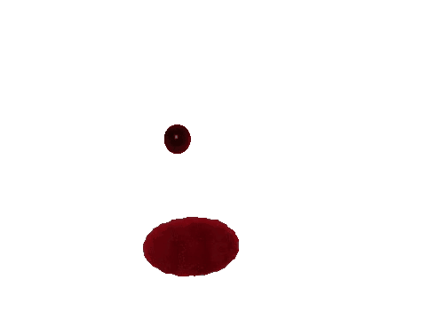

Passions

J'aime tuer le temps et pas que ...je me suis d'ailleurs lancé dans un échange épistolaire à sens unique avec un correspondant que j'apprécie tout particulièrement!
Les balades au clair de lune me détendent. Elles me permettent, au gré de mon humeur, de faire de très belles rencontres éphémères mais très enrichissantes.
Je suis passioné de cuisine alternative. J'affectionne particulièrement travailler les trippes tout en écoutant la musique du groupe ABBA.
D'esprit espiègle, j'invente des jeux de piste et dissémine au fil de mes balades des indices, faisant ainsi de Londres un sympathique terrain de jeux!